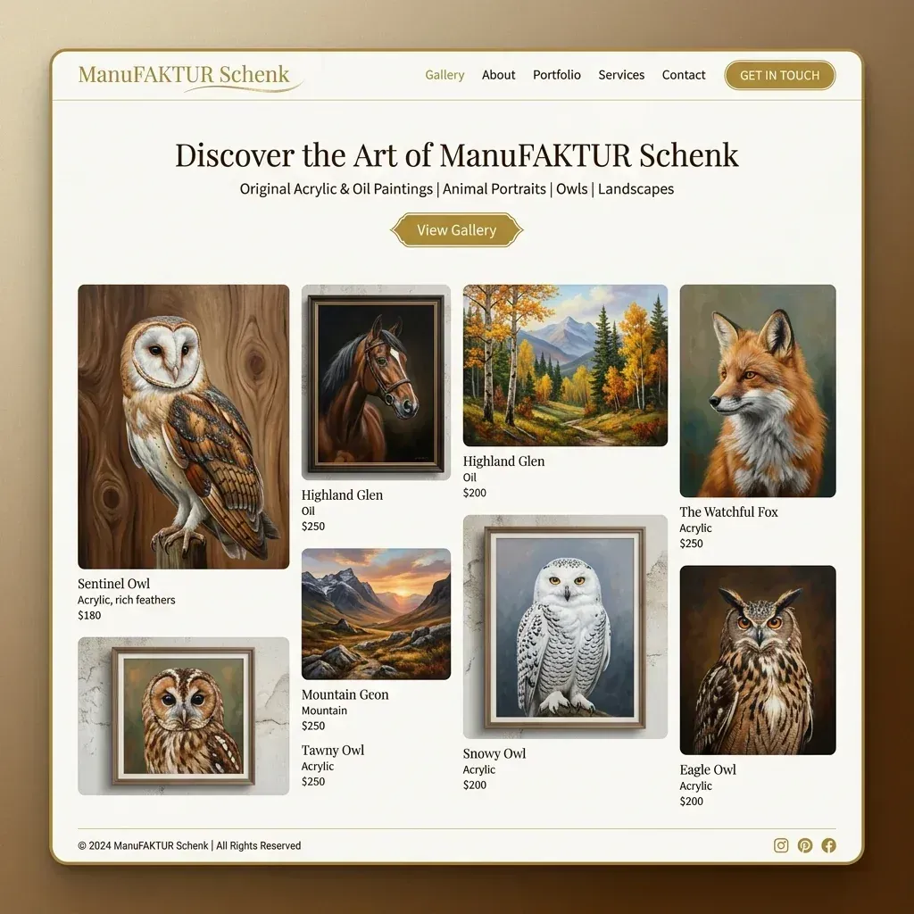

🎨 ManuFAKTUR Schenk — Kunst- & Bildergalerie🖼️ ManuFAKTUR Schenk — Art Portfolio & Gallery

Ein kunstvolles Web-Portfolio für handgemalte Bilder und Kunstwerke. Die responsive Seite präsentiert Tierportraits und Landschaftsgemälde (Acryl/Öl), bietet eine interaktive Bildergalerie mit Lightbox-Effekt, ein individuelles Kontaktformular sowie eine neue, persistente Favoriten/Merkliste (LocalStorage) für interessierte Käufer.
An artistic web portfolio showcasing hand-painted custom artworks. The responsive website features sections for pet portraits and landscapes (acrylic/oil), an interactive lightbox image gallery, a custom order form, and a newly integrated persistent Favorites Wishlist (LocalStorage) for potential buyers.